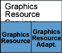

Graphics Resource
Services Collection
The Graphics Resource Services collection provides an abstraction
layer for the memory management of graphics data (which can be pixel data
or non-pixel data, such as lists of OpenVG commands).
Variant: ScreenPlay. Target audience: Device creators.
Note: The Graphics Resource component is deprecated in Symbian^3
and will be removed in Symbian^4. However, a new Graphics Resource Interface
component is planned for Symbian^4. This new component will provide a similar
but reduced API that is optimized for sharing images across processes.
Figure 1. The Graphics Resource Services collection

- Graphics Resource Services Collection Overview
This topic provides an introduction to the Graphics Resource Services collection.
- Graphics Resource Component Overview
The Graphics Resource component is not available on all systems. When present, together with the Graphics Resource Adaptation component, it provides an abstraction layer for the memory management of graphics data, both pixel data and non-pixel data (such as OpenVG command lists). The Graphics Resource component is the generic part, which provides the client API, whereas the Graphics Resource Adaptation component provides the adaptation part, which device creators can adapt to suit their graphics acceleration hardware if any is available.
- Graphics Resource Adaptation Component
The Graphics Resource Adaptation component consists of a reference implementation of the Graphics Resource adaptation layer. The reference implementation has a number of compilation switches that generate minor variations of the implementation for different GPUs, no GPU and the emulator.
- Creating a Graphics Resource Adaptation
This topic provides information about creating a graphics resource adaptation.
- Image Compatibility Guarantees
Copyright ©2010 Nokia Corporation and/or its subsidiary(-ies).
All rights
reserved. Unless otherwise stated, these materials are provided under the terms of the Eclipse Public License
v1.0.